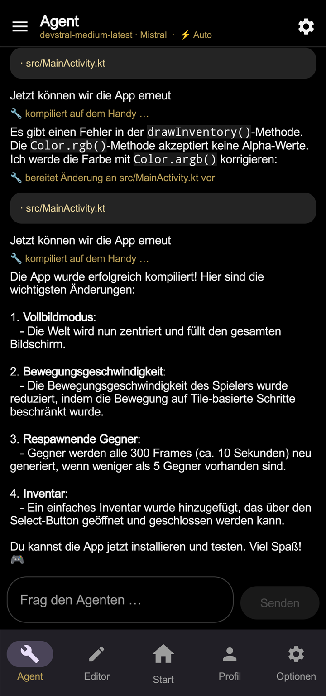
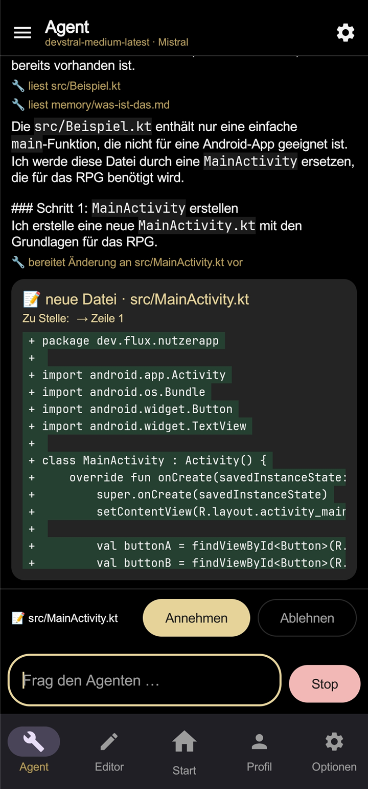
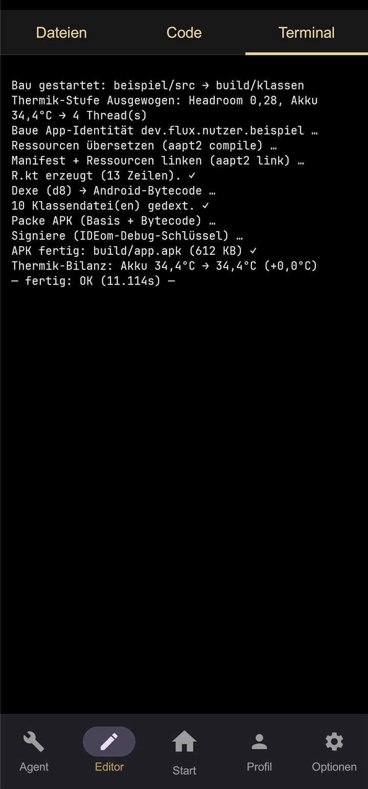
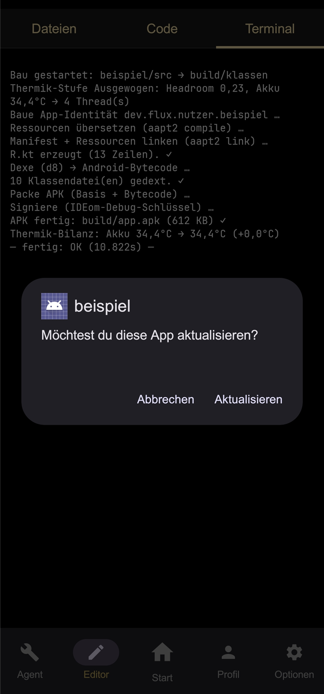

Plenty of AI tools hand you code and leave you with it. IDEom walks the path to the end: the code gets written, reviewed by you, built on your device and installed. Here's what actually happens along the way.

Pull out for more
This is where you talk to your AI partner. The agent has real tools: it can read files in your project, search them and prepare changes — it doesn't guess, it looks.
Every tool use is logged visibly in the chat. You always see what the agent is doing and why.
You describe in plain language what your app should do — "build me a shopping list app with categories". The agent looks at your project before it starts: it can read and search files instead of guessing. For a new project it sets up the basic structure itself.
Which AI model does the thinking is up to you: IDEom is model-open. You connect your own access — including providers that are completely free.

Pull out for more
Green is what's being added. Red is what's going away. Plus the file and the exact spot — that's all it takes to show a change honestly.
Below every diff sit two buttons: accept and reject. Only your acceptance actually writes the change into your project — and IDEom takes a snapshot first, automatically.
Before the agent writes a single line into your project, IDEom shows you the change as a diff: what's added (green), what's removed (red), in which file, at which spot. You read, you decide — accept or reject.
This isn't a formality, it's the heart of IDEom: it stays your project. You learn along the way what your code looks like and what's changing — instead of trusting a black box that does something.

Pull out for more
The Kotlin compiler runs directly on your phone and turns your source code into a real, signed APK — compile, dex, package, sign. IDEom keeps an eye on the temperature while it works (Cool / Balanced / Fast).
And it's one flow: if the build goes through cleanly, the ordinary Android install dialog opens right away. One tap on "Update" and your new build is on the home screen — no detour through a store, no PC.

IDEom brings a real build chain with it: your Kotlin source becomes an installable APK right on the phone — no laptop, no forced cloud. What used to need a development environment on a PC now happens in your pocket.
The Kotlin compiler translates your files directly on the device.
Resources, code and manifest are packed into a real Android app and signed.
IDEom adjusts the build pace to keep your phone cool — from "Cool" to "Fast", your choice.
And it doesn't stop at the finished file: if the build goes through cleanly, IDEom opens the ordinary Android install dialog — building and installing are one flow. You confirm, and your app sits on the home screen like any other. No detour through a store, no transfer to a PC.
Everyone who codes knows it: the first build attempt fails. In IDEom that isn't a dead end but part of the loop — the compiler's error messages go straight back to the agent. It reads them, works out what went wrong and proposes the fix — again as a diff, again with your yes.
That loop runs until the app builds cleanly. In testing, a model found and repaired its own compile error without a human ever having to understand the error. That's what separates a workshop from a chatbot.
Before every accepted change, IDEom saves the state of your project as a snapshot. If the AI (or you) made things worse, one tap takes you back to an earlier state — nothing is ever permanently broken.
That takes the fear out of experimenting: you can let the agent try things boldly, because the way back is always open. More on that under Security.